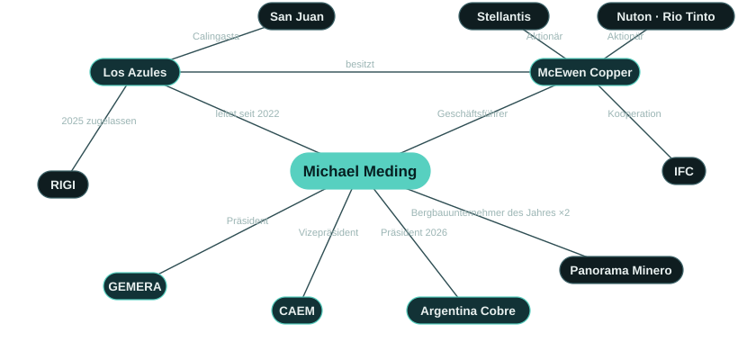

Aktuell: Laufzeitdarlehen über 240 Mio. US-Dollar
Am 27. August 2026 schloss McEwen Copper ein vorrangig besichertes Laufzeitdarlehen über 240 Mio. US-Dollar ab. Mit den Mitteln werden Engineering und vorbereitende Arbeiten in Los Azules auf dem Weg zur endgültigen Investitionsentscheidung finanziert, die für Mitte 2027 angestrebt wird.[7]
This financing reflects our lenders' confidence in Los Azules and in the progress Argentina has made over the past two and a half years. […] We are proud to be building Los Azules here.Diese Finanzierung spiegelt das Vertrauen unserer Darlehensgeber in Los Azules und in die Fortschritte wider, die Argentinien in den vergangenen zweieinhalb Jahren erzielt hat. […] Wir sind stolz darauf, Los Azules hier zu bauen. (Übersetzung der englischen Originalerklärung)
Darlehenskonditionen, Darlehensgeber und die gesamte Finanzierungshistorie →
Überblick
Michael Meding leitet Los Azules, eine Porphyr-Kupferlagerstätte in den Anden von Calingasta in der Provinz San Juan, die nach Angaben von McEwen Copper gemessen an den gesamten Mineralressourcen weltweit auf Platz 10 der unerschlossenen Porphyr-Kupferlagerstätten liegt. Er kam im Februar 2022 zu McEwen Copper, um das Projekt zu leiten, zunächst als Vice President und General Manager, seit 2026 als Geschäftsführer (Managing Director). In seinem ersten Jahr wuchs das Team von 32 auf 142 direkte Beschäftigte, und in den drei Bohrsaisons vor der Machbarkeitsstudie wurden mehr als 120.000 Meter gebohrt. Seitdem hat das Projekt eine aktualisierte vorläufige wirtschaftliche Bewertung (PEA) und eine Machbarkeitsstudie veröffentlicht, die Umweltgenehmigung für Bau und Betrieb erhalten und wurde als erstes Kupferprojekt in das argentinische RIGI aufgenommen. Stellantis und Nuton von Rio Tinto stiegen als strategische Investoren ein, die IFC unterzeichnete eine Kooperationsvereinbarung, Société Générale wurde als Finanzberater für die Fremdfinanzierung des Projekts mandatiert, und im August 2026 schloss McEwen Copper ein Laufzeitdarlehen über 240 Mio. US-Dollar ab. Die endgültige Investitionsentscheidung wird für Mitte 2027 erwartet, die erste kommerzielle Kathode ist für 2030 angestrebt.[1, 4–7, 12–16]
Er wurde in Düsseldorf geboren und machte sein Abitur an der Alfred-Krupp-Schule in Essen, im Ruhrgebiet, wo sein Großvater als Bergmann unter Tage im Steinkohlenbergbau arbeitete. Seine Laufbahn begann bei PwC. Das Unternehmen schickte ihn in die Schweiz, wo er sieben Jahre blieb und über das CFO-Entwicklungsprogramm zu Novartis kam. Mit dem Wechsel nach Chile begannen mehr als fünfzehn Jahre in Lateinamerika, mit CFO-Positionen bei multinationalen Unternehmen in Chile und Argentinien. 2010 kam er in den Bergbau, in den Finanzbereich des argentinischen Geschäfts von Barrick Gold. Dort spielte er eine Schlüsselrolle beim Turnaround der Mine Veladero, bei der Verlängerung ihrer Lebensdauer und bei der strategischen Partnerschaft mit Shandong Gold. Bei Trafigura war er CFAO eines polymetallischen Bergbaubetriebs. Er hat in acht Ländern in Europa sowie in Nord-, Mittel- und Südamerika gearbeitet und lebt abwechselnd in San Juan und Toronto.[2, 3, 17–19]
Er ist Präsident von GEMERA, als erster Ausländer in diesem Amt, Vizepräsident der CAEM als Vertreter der Andes Corporación Minera und Vorstandsmitglied der Cámara Minera de San Juan. Argentina Cobre, die Kupferkonferenz des Landes, leitete er 2025 als Ehrenpräsident und 2026 als Präsident. Er erwarb einen BSc an der Ruhr-Universität Bochum sowie MBA-Abschlüsse an der HHL Leipzig und der Indiana University of Pennsylvania, absolviert derzeit einen Master in Bergbaumanagement an der Universidad Católica de Cuyo und ist Erstautor einer 2026 in Veredas do Direito veröffentlichten Studie zur sozialen Betriebserlaubnis (Social Licence to Operate) im lateinamerikanischen Bergbau.[10, 20–24]

Leistungsbilanz
Jeder Punkt verweist auf seine öffentliche Quelle.
Kapital für eine Neuerschließung
Strategische Investoren, eine Kooperationsvereinbarung mit der IFC, ein Berater für die Fremdfinanzierung des Projekts und ein Laufzeitdarlehen über 240 Mio. US-Dollar für ein unerschlossenes Kupferprojekt.
- „Mit Meding an Bord nahm das Unternehmen 453 Millionen Dollar auf und holte Investitionen von“ Stellantis und Rio Tinto.[25]
- Nuton, ein Unternehmen der Rio-Tinto-Gruppe, investierte insgesamt 100 Mio. US-Dollar; Stellantis wurde strategischer Aktionär.[26]
- Kooperationsvereinbarung mit der IFC, September 2025.[14]
- Société Générale als Finanzberater für die Fremdfinanzierung des Projekts mandatiert, Mai 2026.[15]
- Vorrangig besichertes Laufzeitdarlehen über 240 Mio. US-Dollar abgeschlossen, August 2026.[7]
Genehmigungen und politische Rahmenbedingungen
Los Azules erhielt die Umweltgenehmigung und wurde als erstes Kupferprojekt in das RIGI aufgenommen.
- Umweltgenehmigung für Bau und Betrieb im Dezember 2024 erteilt; die technische Prüfung durch die Provinz dauerte weniger als ein Jahr.[27]
- Die Resolución 1553/2025 nimmt Los Azules mit einem Investitionsplan über 2.672 Mio. US-Dollar in das RIGI auf.[28]
- LA NACION: das erste Kupferbergbauvorhaben, das im Rahmen des Regimes zugelassen wurde.[6]
- In seinen Worten: „Wir haben den RIGI-Antrag strukturiert und umgesetzt.“[26]
Von der Ressource zur Machbarkeitsstudie
Legte eine aktualisierte PEA und eine Machbarkeitsstudie vor und brachte das Projekt in die Detailplanung.
- Machbarkeitsstudie, Oktober 2025: Kapitalwert (NPV8) nach Steuern 2,9 Mrd. US-Dollar, interner Zinsfuß 19,8 %.[5]
- Machbarkeitsbohrungen mit 70.000 Metern in der Saison 2023/24 abgeschlossen.[29]
- 2. Quartal 2026: „Die großen Prozesspakete sind vergeben: die SX-EW-Anlage, die Schwefelsäureanlage und die Brechanlage.“[30]
Ein Team aus San Juan
Eine in der Provinz verwurzelte Projektorganisation.
- 32 Beschäftigte im Dezember 2021, 142 direkte Beschäftigte im Dezember 2022.[16]
- 2023: Management „99% integrada por sanjuaninos“ (zu 99 % aus San Juan).[3]
- April 2026: 512 Beschäftigte in der Spitze, 87 % davon aus San Juan; 73,5 % des von Lieferanten fakturierten Volumens entfielen auf Unternehmen aus San Juan.[31]
Führungsrolle in der Branche
Vertritt die argentinische Exploration und die Kupferbranche im In- und Ausland.
Finanzen im Bergbau, aus eigener Erfahrung
Vor Los Azules zwei Jahrzehnte im Finanzbereich von Konzernen und Bergbaubetrieben.
KI im Unternehmen
Die Geologen von Los Azules arbeiten mit KI und maschinellem Lernen, und 2026 wurde das gesamte Team in KI geschult.
- „Todos mis geólogos están trabajando hoy tanto con IA como con machine learning“ (alle meine Geologen arbeiten heute mit KI und maschinellem Lernen).[32]
- Forbes Argentina, 2026: wie das Team von Los Azules KI in der Exploration einsetzt.[32]
- 2026 wurde das gesamte Team von Los Azules in KI geschult.[33]
Forschung
Veröffentlicht Forschungsarbeiten zur sozialen Betriebserlaubnis im lateinamerikanischen Bergbau.
Los Azules im Überblick
Los Azules ist eine Porphyr-Kupferlagerstätte in den Anden von Calingasta, San Juan. Die Machbarkeitsstudie vom Oktober 2025 sieht ein Bergwerk mit Tagebau, Haufenlaugung und SX-EW (Solventextraktion und Elektrolyse) vor, das Kupferkathoden mit 99,99 % Reinheit direkt am Standort herstellen würde: ohne Versand von Konzentrat, ohne Absetzbecken für Tailings und mit Strom zu 100 % aus erneuerbaren Quellen. Die nachgewiesenen und wahrscheinlichen Reserven enthalten 10,2 Mrd. Pfund Kupfer (Stichtag 3. September 2025) und tragen im Basisszenario eine Lebensdauer der Mine von 21 Jahren. Los Azules war das erste Kupferprojekt, das in das argentinische RIGI aufgenommen wurde. Die Ressourcen außerhalb der Reserven und die Wachstumsmöglichkeiten über die Studie hinaus sind mit den zugehörigen Warnhinweisen auf der Seite zu Los Azules dargestellt.[5, 6, 35]
Meilensteine von Los Azules, 2022–2030
Los Azules, seit er im Februar 2022 die Leitung übernahm. Die letzten beiden Zeilen sind Ziele.[1, 4, 5, 7, 12, 14–16, 28, 35]
- 2022Feb.Wechselt zu McEwen Copper und übernimmt die Leitung von Los Azules
- 2022Aug.Nuton von Rio Tinto wird strategischer Investor
- 2022Dez.Das Team wächst binnen eines Jahres von 32 auf 142 direkte Beschäftigte
- 2023Feb.Stellantis wird strategischer Aktionär
- 2023JuniAktualisierte vorläufige wirtschaftliche Bewertung (PEA)
- 2023Nov.Explorationsunternehmen des Jahres
- 2024MaiMachbarkeitsbohrungen abgeschlossen: 70.000 Meter in dieser Saison, nach 39.000 Metern 2022/23
- 2024Aug.Absichtserklärung (MOU) mit YPF Luz für Strom zu 100 % aus erneuerbaren Quellen
- 2024Dez.Umweltgenehmigung für Bau und Betrieb
- 2025JuniErste Kupferkathoden aus Erz von Los Azules, im Labormaßstab hergestellt
- 2025Sept.Kooperationsvereinbarung mit der IFC; RIGI-Zulassung eines Investitionsplans über 2,67 Mrd. US-Dollar, die erste für ein Kupferprojekt
- 2025Okt.Machbarkeitsstudie veröffentlicht
- 2026MärzLos Azules von AmCham Argentina bei der Argentina Week in New York gewürdigt
- 2026MaiSociété Générale als Finanzberater für die Fremdfinanzierung des Projekts mandatiert
- 2026Aug.Vorrangig besichertes Laufzeitdarlehen über 240 Mio. US-Dollar mit Sprott, Rob McEwen und weiteren Darlehensgebern abgeschlossen
- 2027MitteEndgültige Investitionsentscheidung und vollständige Projektfinanzierung (Ziel)
- 2030Erste kommerzielle Kupferkathode (Ziel)
Auszeichnungen


| Jahr | Auszeichnung | Verliehen von | Empfänger |
|---|---|---|---|
| 2025 | Bergbauunternehmer des Jahres (Empresario Minero del Año) La Noche de las Distinciones, Argentina: Oro, Plata y Cobre, Buenos Aires, Dezember 2025. Quelle ↗ | Panorama Minero | Persönlich |
| 2024 | Bergbauunternehmer des Jahres (Empresario Minero del Año) Vom Komitee von Panorama Minero gewählt, weil er „strategische Weitsicht mit solider technischer Kompetenz“ verbinde. Buenos Aires, Dezember 2024. Quelle ↗ | Panorama Minero | Persönlich |
| 2024 | Herausragender Migrant „Diploma Migrante destacado“ der argentinischen Migrationsbehörde (Dirección Nacional de Migraciones), überreicht am Tag des Einwanderers beim offiziellen Festakt in San Juan am 4. September 2024, für seinen Beitrag zur Entwicklung Argentiniens und zur kulturellen Vielfalt des Landes. Quelle ↗ | Dirección Nacional de Migraciones | Persönlich |
| 2026 | Besondere Anerkennung, Argentina Week AmCham Argentina würdigte die Andes Corporación Minera für ihr Engagement für produktive Investitionen im Rahmen des RIGI. Überreicht in New York von Wirtschaftsminister Luis Caputo zum Abschluss der Argentina Week, März 2026; gemeinsam mit Rob McEwen entgegengenommen. Quelle ↗ | AmCham Argentina | Los Azules |
| 2026 | Herausragendes Bergbauunternehmen im Bereich CSR Premios Argentina Mining, Salta, September 2026. Quelle ↗ | Argentina Mining | Los Azules |
| 2026 | Siegel „Engagement für Alphabetisierung“ Für die Unterstützung des Alphabetisierungsplans der Provinz, Comprendo y Aprendo. San Juan, Juli 2026. Quelle ↗ | Regierung der Provinz San Juan | Los Azules |
| 2025 | Premio INVERTIR, Bergbau Für McEwen Copper entgegengenommen beim XIII Fórum Empresarial de Buenos Aires, Dezember 2025. Quelle ↗ | LIDE Argentina | Los Azules |
| 2023 | Explorationsunternehmen des Jahres Für die Explorationskampagne 2022–23 in Calingasta. Buenos Aires, November 2023. Quelle ↗ | Panorama Minero | Los Azules |
Funktionen und Werdegang
Aktuelle Funktionen
- GeschäftsführerMcEwen Copperleitet Los Azules seit Februar 2022
- Präsident und General ManagerAndes Corporación Minera (Los Azules)
- PräsidentGEMERAseit 2024 · erster Ausländer in diesem Amt
- VizepräsidentCAEM2025–2027 · für Andes Corporación Minera
- VorstandsmitgliedCámara Minera de San Juan2025–2027
- PräsidentArgentina Cobre2026 · Ehrenpräsident 2025
- EhrenpräsidentExpo San Juan Minera 2026
Werdegang
- PwCBeratung in Produktion und Finanzen; sieben Jahre in der SchweizSchweiz
- NovartisCFO-Entwicklungsprogramm; Finanzverantwortung für eine internationale Geschäftseinheit; danach ChileSchweiz · Chile
- Multinationale UnternehmenCFO-Positionen in Chile und ArgentinienChile · Argentinien
- Barrick GoldAb 2010 im Finanzbereich des argentinischen Geschäfts: Turnaround von Veladero, Verlängerung der Lebensdauer der Mine, Partnerschaft mit Shandong GoldSan Juan
- TrafiguraCFAO eines polymetallischen BergbaubetriebsLateinamerika
- McEwen CopperLeitet Los Azules seit Februar 2022; GeschäftsführerSan Juan · Toronto
Ausbildung
- BSc, Ruhr-Universität Bochum
- MBA, HHL Leipzig Graduate School of Management
- MBA, Indiana University of Pennsylvania
- Master in Bergbaumanagement (laufend), Universidad Católica de Cuyo
Forschung
- Meding, M., Arias-Valle, M. B., & Ocampo Abadía, A. A. (2026). “The Legitimacy Trilemma: Strategic Communication, Crisis of Trust, and the Maintenance of the Social License to Operate in Large-Scale Mining in Latin America.” Veredas do Direito, 23(1), e233939. doi:10.18623/rvd.v23.n1.3939
- Meding, M. E., Arias Valle, M. B., & Ocampo Abadía, A. (2025). “Mapping the Knowledge Landscape of Social License to Operate in Mining: A Bibliometric Study.” SSRN preprint. doi:10.2139/ssrn.5407877
In eigenen Worten
I’ve learned how to get things done in Argentina. Sometimes it is a matter of persistence, other times it is more about relationships than about formalities.Ich habe gelernt, wie man in Argentinien etwas bewegt. Manchmal ist es eine Frage der Beharrlichkeit, manchmal geht es mehr um Beziehungen als um Formalitäten.
We believe in the future of Argentina. It’s in a good spot geopolitically and has what the world needs.Wir glauben an die Zukunft Argentiniens. Das Land ist geopolitisch gut aufgestellt und hat, was die Welt braucht.
Queremos ser un buen vecino y que digan que somos un ejemplo de cómo se debería hacer minería.Wir wollen ein guter Nachbar sein, und die Leute sollen sagen, dass wir ein Beispiel dafür sind, wie Bergbau betrieben werden sollte.
Hasta diciembre del 2023, todo el mundo decía qué lástima que el proyecto está en Argentina. Hoy la respuesta es la opuesta: qué interesante que está en Argentina.Bis Dezember 2023 sagten alle: Wie schade, dass das Projekt in Argentinien liegt. Heute ist die Antwort das Gegenteil: Wie interessant, dass es in Argentinien liegt.
Todos mis geólogos están trabajando hoy tanto con IA como con machine learning para multiplicar sus capacidades de análisis.Alle meine Geologen arbeiten heute sowohl mit KI als auch mit maschinellem Lernen, um ihre Analysefähigkeiten zu vervielfachen.
Nada funciona sin minería: los zapatos, el celular, el saco, el micro.Nichts funktioniert ohne Bergbau: die Schuhe, das Handy, das Sakko, der Bus.
Our main challenge isn’t engineering … it’s mobilizing the necessary funding so we can move at the pace we’d like.Unsere größte Herausforderung ist nicht die Technik … es geht darum, die nötigen Finanzmittel zu mobilisieren, damit wir in dem Tempo vorankommen, das wir uns wünschen.
La confianza se gana en gramos y se pierde en kilos.Vertrauen gewinnt man grammweise und verliert es kiloweise.
Jüngste Auftritte
| Jahr | Datum | Ort | Veranstaltung | Rolle |
|---|---|---|---|---|
| 2026 | 28.–30. Okt. | Buenos Aires · Mendoza | 5th Argentina Critical Minerals Summit Demnächst | Bestätigter Redner |
| 2026 | 23. Sept. | Beaver Creek | Precious Metals Summit | Interview mit dem Investing News Network |
| 2026 | Sept. | Buenos Aires | X Foro PYMES Italia–América Latina | „Minerales críticos y desarrollo federal“ (kritische Mineralien und föderale Entwicklung), mit den Gouverneuren von San Juan, Jujuy und Catamarca |
| 2026 | Sept. | Argentinien | Forbes Mining Summit | „En Foco“, auf der Bühne mit Fernando Heredia |
| 2026 | Santiago de Chile | Argentine Embassy in Chile | „Perspectivas de la Minería en la Región“ (Perspektiven des Bergbaus in der Region), mit den Bergbaubehörden beider Länder | |
| 2026 | Aug. | Buenos Aires | LA NACION, Minería | Im Gespräch mit José Del Rio |
Aktuelle Berichterstattung
- Forbes ArgentinaCon el uso de IA, Los Azules espera descubrir nuevos recursos y aumentar la vida útil del proyecto
- Neura · Alejandro FantinoCaso 004: Michael Meding (McEwen Copper, Proyecto Los Azules) Liderologías - Filosofía del liderazgo
- LA NACIONMichael Meding: “La Argentina podría estar entre los cinco mayores productores de cobre del mundo”
- Benchmark SourceLos Azules Copper Project
- ReutersCobre y cerveza: ejecutivo minero alemán abre fábrica en Argentina para saciar su sed
- MDZLos Azules acelera hacia 2027: los detalles del plan de inversión de US$ 4.000 millones
Fragen und Antworten
Wer ist Michael Meding?
Ein deutscher Bergbaumanager, der seit Februar 2022 das Kupferprojekt Los Azules in San Juan, Argentinien, leitet und Geschäftsführer von McEwen Copper ist. Er ist Präsident von GEMERA und wurde 2024 und 2025 als Bergbauunternehmer des Jahres ausgezeichnet.[1, 2, 8, 9]
Was hat er bei Los Azules erreicht?
Unter seiner Leitung erhielt das Projekt die Umweltgenehmigung (Dezember 2024), veröffentlichte die Machbarkeitsstudie (Oktober 2025), wurde als erstes Kupferprojekt im argentinischen RIGI zugelassen und schloss ein Laufzeitdarlehen über 240 Mio. US-Dollar ab (August 2026). Stellantis und Nuton von Rio Tinto stiegen als strategische Aktionäre ein, und die IFC unterzeichnete eine Kooperationsvereinbarung.[4–7, 12, 14]
Welche Auszeichnungen hat Michael Meding erhalten?
Bergbauunternehmer des Jahres 2024 und 2025 (Panorama Minero) sowie 2024 das Diploma Migrante destacado der argentinischen Dirección Nacional de Migraciones. Unter seiner Leitung erhielt Los Azules die Auszeichnung Explorationsunternehmen des Jahres 2023, den Bergbaupreis LIDE INVERTIR 2025, 2026 eine besondere Anerkennung von AmCham Argentina und weitere Auszeichnungen.[8, 9, 26, 36]
Was ist GEMERA?
Die Grupo de Empresas Mineras Exploradoras de la República Argentina, der Verband der Explorationsunternehmen. Meding ist seit 2024 ihr Präsident, als erster Ausländer in diesem Amt, und vertritt die Auffassung, dass Argentinien seine Explorationsausgaben verdreifachen müsse.[10, 20, 37]
Welchen beruflichen Hintergrund hat er?
Unternehmens- und Bergbaufinanzen: PwC und Novartis in der Schweiz, CFO-Positionen bei multinationalen Unternehmen in Chile und Argentinien, ab 2010 im Finanzbereich des argentinischen Geschäfts von Barrick Gold, unter anderem bei Veladero, sowie CFAO eines polymetallischen Bergbaubetriebs bei Trafigura.[2, 19]
Wo ist Michael Meding ansässig?
In San Juan, Argentinien, wo Los Azules geführt wird, und in Toronto, wo McEwen Copper seinen Hauptsitz hat.[38]
Welche Sprachen spricht er?
Deutsch, Englisch und Spanisch.[2]
Quellen
- 1GlobeNewswire. McEwen Copper Announces Management Addition. 2022-02-17. www.globenewswire.com
- 2McEwen Inc.. Management team: Michael Meding, Managing Director, McEwen Copper. 2026. www.mcewenmining.com
- 3Tiempo de San Juan. Cómo piensa, qué hace y los secretos del gerente de Los Azules. 2023-05-07. www.tiempodesanjuan.com
- 4McEwen Inc. (SEC 8-K). Los Azules receives environmental approval for construction and operation. 2024-12-03. www.sec.gov
- 5McEwen Inc.. Los Azules Feasibility Study Confirms Economically Robust Copper Project With Leading ESG Performance. 2025-10-07. www.mcewenmining.com
- 6LA NACION. El Gobierno aprobó un nuevo proyecto RIGI: una minera invertirá US$2700 millones en San Juan. 2025-09-26. www.lanacion.com.ar
- 7McEwen Inc.. McEwen Copper Completes US$240 Million Term Loan to Advance Los Azules Toward Final Investment Decision. 2026-08-27. www.mcewenmining.com
- 8Minería & Desarrollo. Eligieron a Michael Meding de Los Azules como el Empresario Minero del Año. 2024-12-05. www.mineriaydesarrollo.com
- 9Diario de Cuyo. El vicepresidente de McEwen Copper, Michael Meding, fue elegido como 'Empresario Minero del Año 2025'. 2025-12-04. www.diariodecuyo.com.ar
- 10EconoJournal. Michael Meding, nuevo presidente de Gemera. 2024-10-07. econojournal.com.ar
- 11McEwen Inc.. Los Azules project page. 2026. www.mcewenmining.com
- 12Stellantis. Stellantis announces strategic copper investment in Argentina. 2023-02-27. www.stellantis.com
- 13GlobeNewswire. McEwen Copper announces an additional US$35 million investment by Nuton. 2024-10-24. www.globenewswire.com
- 14IFC, World Bank Group. IFC supports McEwen Copper on sustainable financing for Los Azules. 2025-09-24. www.ifc.org
- 15McEwen Inc.. McEwen Copper appoints Société Générale as financial advisor for project debt financing of Los Azules. 2026-05-14. www.mcewenmining.com
- 16LinkedIn, Michael Meding. 2022 achievements at Los Azules (team 32 to 142). 2023-01-02. www.linkedin.com
- 17LinkedIn, Michael Meding. Abitur at the Alfred Krupp Schule, Essen. 2026-01-23. www.linkedin.com
- 18LinkedIn, Michael Meding. My grandfather, an underground coal miner in the Ruhr. 2026-01-23. www.linkedin.com
- 19Mining Press. Michael Meding (Barrick): San Juan, por la minería, más independiente. 2014-09-08. miningpress.com
- 20Handelsblatt. Global Risk: Das erwartet Investoren in Mileis Argentinien. 2024-12-10. www.handelsblatt.com
- 21CAEM. La Cámara Minera de San Juan eligió nuevas autoridades. 2025-07-07. caem.com.ar
- 22LinkedIn, Michael Meding. Honorary President, Argentina Cobre 2025. 2025-08-05. www.linkedin.com
- 23LinkedIn, Los Azules. Los Azules en Expo San Juan Minera 2026. 2026-05-07. www.linkedin.com
- 24Veredas do Direito. The Legitimacy Trilemma (Meding, Arias-Valle, Ocampo Abadía, 2026). 2026-01-09. doi.org
- 25Fastmarkets. Goldcorp founder Rob McEwen bets big on Argentine copper. 2025-06-03. www.fastmarkets.com
- 26LinkedIn, Michael Meding. RIGI Champion, AmCham Argentina. 2026-03-12. www.linkedin.com
- 27Minería & Desarrollo. El proyecto de cobre Los Azules en San Juan obtuvo luz verde para su explotación. 2024-12-03. www.mineriaydesarrollo.com
- 28Boletín Oficial de la República Argentina. Resolución 1553/2025, Ministerio de Economía: Proyecto Los Azules admitted to RIGI. 2025-10-14. www.boletinoficial.gob.ar
- 29LinkedIn, Michael Meding. Feasibility drilling completed: 70,000 metres this season. 2024-05-16. www.linkedin.com
- 30The Motley Fool (transcript). McEwen (MUX) Q2 2026 earnings call transcript. 2026-08-13. www.fool.com
- 31Minería & Desarrollo. Los Azules invirtió USD 83,9 millones en los últimos 16 meses. 2026-06-08. www.mineriaydesarrollo.com
- 32Forbes Argentina. Con el uso de IA, Los Azules espera descubrir nuevos recursos. 2026-09-03. www.forbesargentina.com
- 33LinkedIn, Michael Meding. Whole team trained on AI. 2026-04-26. www.linkedin.com
- 34SSRN. Mapping the Knowledge Landscape of Social License to Operate in Mining: A Bibliometric Study (Meding, Arias Valle, Ocampo Abadía, 2025). 2025. doi.org
- 35YPF Luz. YPF Luz y Los Azules firman acuerdo exclusivo de energía renovable. 2024-08-26. www.ypfluz.com
- 36LinkedIn, Michael Meding. Diploma from the Dirección Nacional de Migraciones, San Juan. 2024-09-04. www.linkedin.com
- 37Ámbito. GEMERA advirtió que Argentina desconoce el 80% de sus recursos mineros. 2026-05-12. www.ambito.com
- 38McEwen Inc. (SEC 10-K/A). McEwen Copper Inc. financial statements 2024 (head office). 2025-05-02. www.sec.gov
- 39Reuters via GBM. Cobre y cerveza: ejecutivo minero alemán abre fábrica en Argentina. 2026-05-12. gbm.com